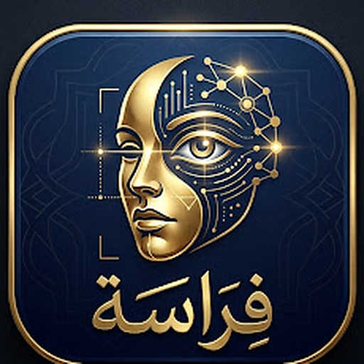
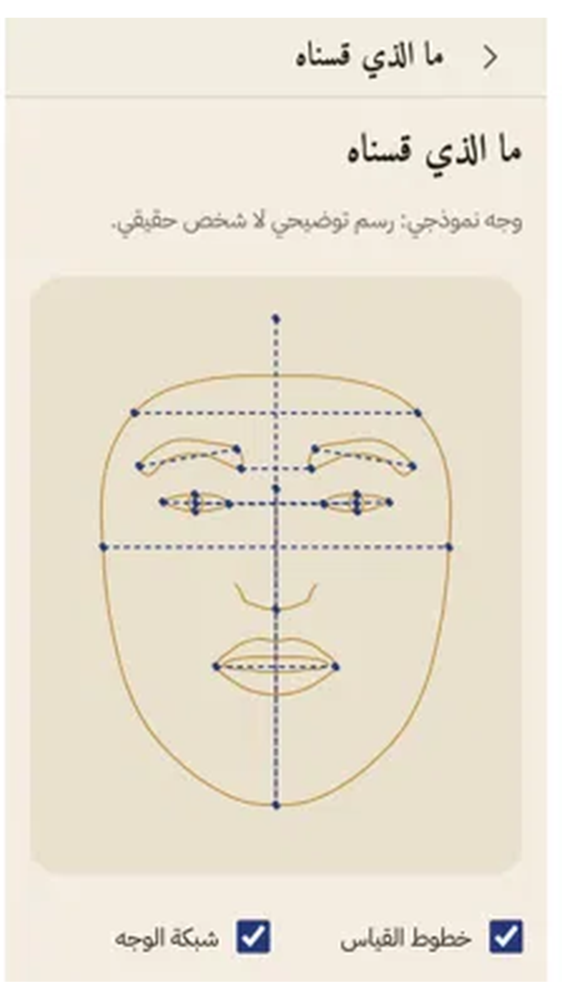
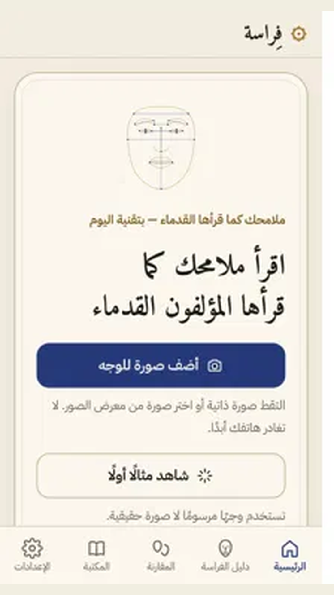
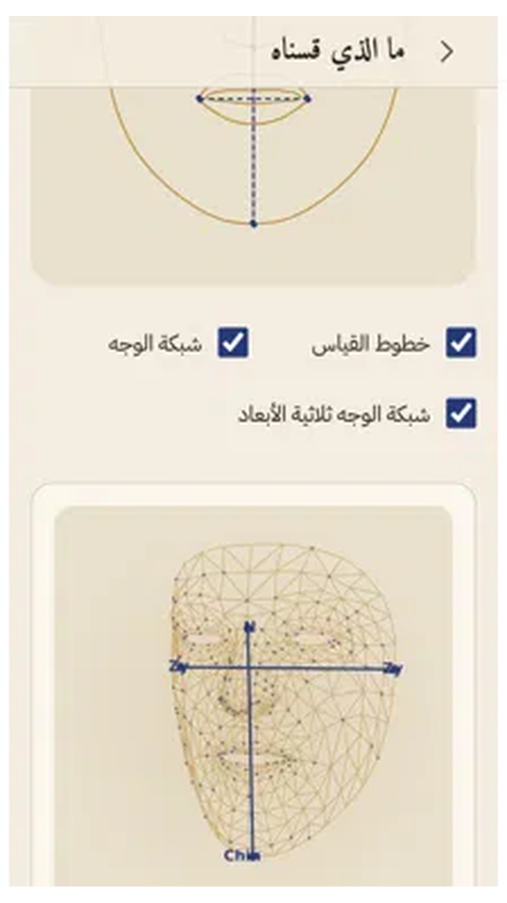
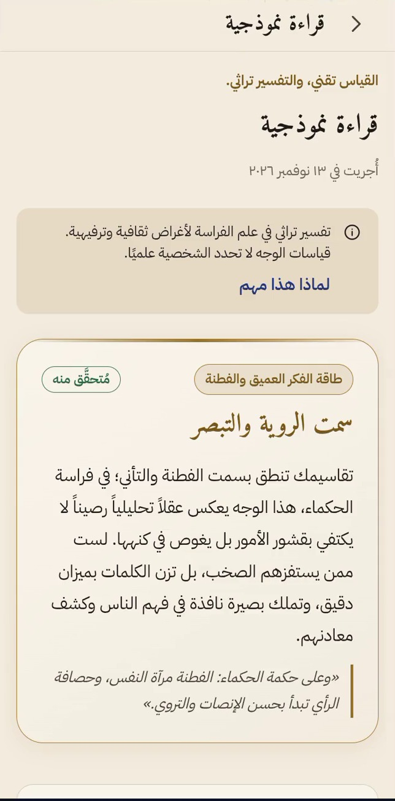
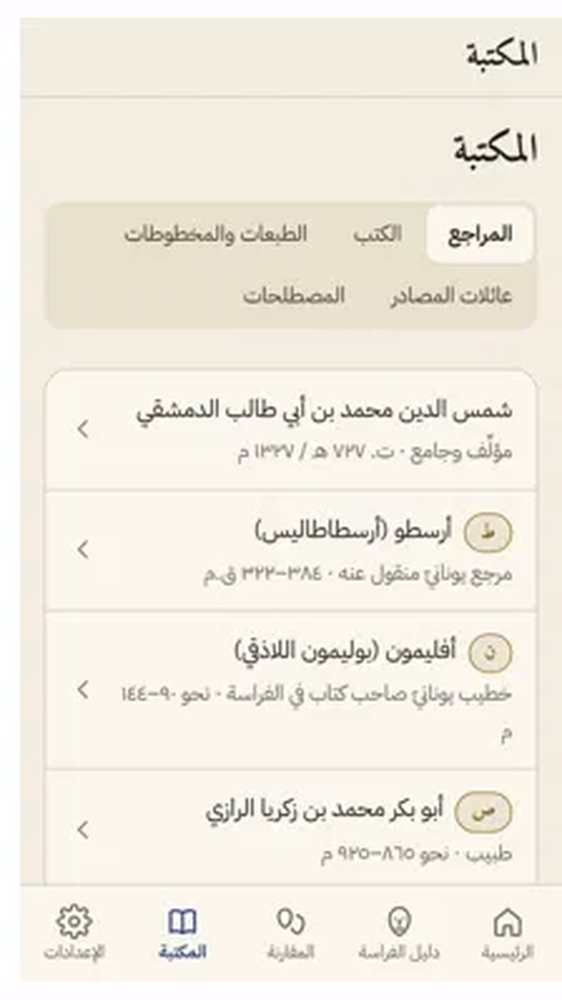

ماذا قال حكماء العرب عن ملامح الوجه؟
يقيس تطبيق فِراسة نسب ملامح الوجه مباشرةً على هاتفك دون رفع أي صورة، ويعرض لك النصوص الكلاسيكية من كتب الفِراسة العربية مع ذكر اسم الكتاب والمؤلف للمقارنة والتأمل التراثي.





عروض الفيديو
فِراسة: من كتب التراث إلى هاتفك (20 ثانية)
نظرة على المخطوطات الكلاسيكية، القياس المحلي على الوجه التوضيحي، ومكتبة المراجع الموثّقة.
خصوصية تامة: صورتك لا تغادر جهازك (22 ثانية)
كيف يعمل القياس ثلاثي الأبعاد محلياً على الجهاز مع عرض استشهادات الدمشقي والرازي.
ماذا يقدّم تطبيق فِراسة؟
تحليل هندسي محلي بالكامل
- قياس نسب الجبهة والعينين والفك والأنف عبر شبكة هندسية دقيقة على الهاتف فقط.
- لا حسابات مطلوبة ولا إرسال لأي صورة إلى أي خادم خارجي.
- وضع الرسم التوضيحي الجاهز للاستكشاف الفوري دون استخدام صورة شخصية.
مكتبة مصادر تاريخية موثّقة
- تصفّح ما دوّنه شمس الدين الدمشقي وأبو بكر الرازي وأرسطو وأفليمون.
- عرض واضح لكل ملمح مع الإشارة الصريحة إلى الكتاب والمصدر الكلاسيكي.
- مجاني مع إعلانات AdMob (+ قراءة إضافية بمكافأة)، أو ترقية Firasah Pro لمرة واحدة (€3.99) لإزالة الإعلانات.
أسئلة شائعة
هل تُرفع صوري أو تُحفظ على خوادم خارجية؟
لا، المعالجة كاملة تتم محلياً داخل هاتفك، ويمكنك تجربة التطبيق بالرسم النموذجي المدمج دون التقاط أي صورة.
هل يعمل التطبيق باللغة العربية الفصحى؟
نعم، واجهة التطبيق والمكتبة والشروحات التاريخية مصممة بالكامل باللغة العربية الواضحة.
ما الفرق بين النسخة المجانية و Firasah Pro؟
النسخة المجانية تمنحك قراءات يومية مع دعم إعلانات AdMob وإمكانية فتح قراءة إضافية بمشاهدة إعلان مكافأة، بينما تمنحك ترقية Firasah Pro لمرة واحدة عبر غوغل بلاي تجربة خالية تماماً من الإعلانات وقراءات كاملة.
للاستفسارات والدعم: digital.nexus.studios2@gmail.com · صفحة التطبيق على Google Play